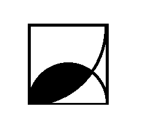

求阴影部分面积
题目
求阴影部分面积！
求四分之一圆和二分之一圆分割出的阴影面积。

思路
使用蒙特·卡罗方法，随机向一个面积/体积内生成点，然后统计面积内的点的数量以求得阴影部分面积。
代码
1
2
3
4
5
6
7
8
9
10
11
12
13
14
15
16
17
18
19
20
21
22
23
24
25
26
27
28
29
30
31
32
33
34
35
36
37
|
#include <iostream>
#include <stdlib.h>
#include <math.h>
#include <time.h>
using namespace std;
#define LENGTH 0.0001
#define DOT 100000000
int main(int argc, char const *argv[])
{
srand(time(NULL));
int count = 0;
for(int i = 0; i < DOT; i++)
{
double x = (rand() % (int)(1 / LENGTH)) * LENGTH;
double y = (rand() % (int)(1 / LENGTH)) * LENGTH;
double num = sqrt(pow(x, 2) + pow((1 - y), 2));
if (num <= 1)
{
num = sqrt(pow((x - 0.5), 2) + pow(y, 2));
if(num < 0.5)
count++;
}
}
cout << count << " " << DOT << endl;
cout << (double)count / DOT << endl;
return 0;
}
|